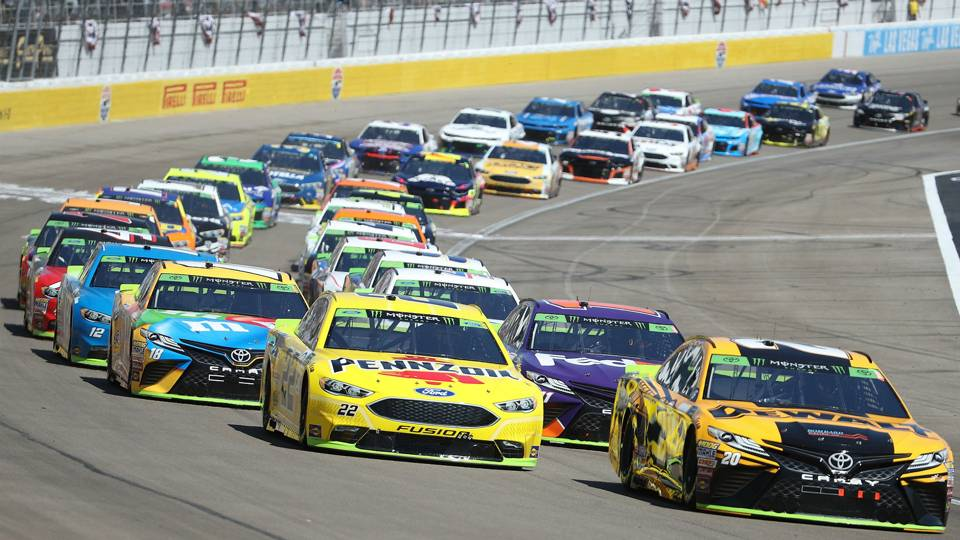
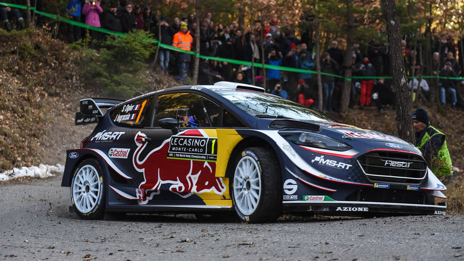

NASCAR hace referencia a las siglas en inglés de National Association for Stock Car Auto Racing ("Asociación Nacional de Carreras de Automóviles de Serie") y, actualmente, representa la categoría automovilística más comercial y popular de los Estados Unidos, y la competición de stock cars ("automóviles de serie") más importante del mundo. Es miembro del Automobile Competition Committee for the United States. Es considerada la categoría más importante del automovilismo estadounidense.
La particularidad de estas competiciones se basa, principalmente, en que se suelen correr en circuitos ovales y son siempre automóviles de serie, es decir, automóviles cuyo diseño básico es el de un automóvil salido de fábrica. Actualmente, los automóviles son fabricados por especialistas basándose en los perfiles y especificaciones detallados por NASCAR y los motores están provistos por Toyota, Ford y Chevrolet asegurando un nivel de competición parejo para todos los participantes.

La Blancpain GT Series es un campeonato de automovilismo de velocidad que se disputa en Europa desde el año 2011. Participan gran turismos de los reglamentos GT3 y GT4. Lo organizan la Stéphane Ratel Organisation y el Real Automóvil Club de Bélgica, y tiene patrocinio titular de la marca de relojes Blancpain.
La Blancpain GT Series Endurance Cup recuperó ciertas características del Campeonato FIA GT que fueron dejadas de lado en su conversión en el Campeonato Mundial de GT: carreras de duración media (3 horas), varias clases, combinación de profesionales y amateurs, y la inclusión de las 24 Horas de Spa como carrera más prestigiosa y de puntaje extra.
El Campeonato Mundial de Rally (FIA World Rally Championship en inglés, abreviado WRC) es una competición internacional de rally, organizada por la Federación Internacional del Automóvil (FIA) y que se disputa anualmente desde 1973.
El campeonato se compone actualmente de 14 eventos (rallyes) que se disputan en carreteras cerradas al tráfico sobre diversas superficies, que van desde la grava y asfalto al barro, la nieve y el hielo. Cada rally suele tener tres días de duración y se divide de 15 a 25 tramos, que se compiten contrarreloj con largada individual. El ganador de la carrera es quien finaliza la carrera con el menor tiempo acumulado en los tramos cronometrados.
En el Campeonato Mundial de Rally se disputan dos campeonatos: el Campeonato de Pilotos (FIA World Rally Championship for Drivers) y el Campeonato de Constructores (FIA World Rally Championship for Manufacturers), diferentes pero basados en el mismo sistema de puntos, y en el que todas las pruebas son puntuables para ambos certámenes.
A partir de la temporada 2013 este campeonato tiene nuevas categorías, ya que se creó el Campeonato Mundial de Rally 2 (World Rally Championship 2 en inglés o WRC 2), que era el Campeonato Mundial de Rally Super 2000 y al cual se le integró el Grupo N del Campeonato Mundial de Rally de Automóviles de Producción. Adicionalmente, este último cambió de nombre a Campeonato Mundial de Rally 3 (World Rally Championship 3 en inglés o WRC 3) y es sólo para automóviles de tracción delantera. Finalmente, la Academia WRC cambió de nombre a Campeonato Mundial Junior (Junior WRC en inglés).

El Campeonato Mundial de Fórmula 1 de la FIA, más conocida como Fórmula 1 o F1, es la máxima competición de automovilismo internacional y campeonato de deporte motor más popular y prestigioso del mundo.La entidad que la dirige es la Federación Internacional del Automóvil (FIA). El Formula One Group es propiedad y operado por la empresa estadounidense Liberty Media desde septiembre de 2016.
A cada carrera se le denomina Gran Premio y el torneo que las agrupa se denomina Campeonato Mundial de Fórmula 1. La mayoría de los circuitos de carreras donde se celebran los Grandes Premios son autódromos, aunque también se utilizan circuitos callejeros y anteriormente se utilizaron circuitos ruteros. A su vez, los automóviles utilizados son monoplazas con la última tecnología disponible, siempre limitadas por un reglamento técnico; algunas mejoras que fueron desarrolladas en la Fórmula 1 terminaron siendo utilizadas en automóviles comerciales, como el freno de disco. En cuanto al ajuste del motor. En las que se llevara a cabo lograr una alta eficacia en competencias futuras logrando una velocidad de alcanze aproximadamente de 526km / 478MPH pudiendo ser en la generación futura del año 2019/2020.
El inicio de la Fórmula 1 moderna se remonta al año 1950, en el que participaron escuderías como Ferrari, Alfa Romeo y Maserati. Algunas fueron reemplazadas por otras nuevas como McLaren, Williams, Red Bull y Renault, que se han alzado varias veces con el Campeonato Mundial de Constructores. Las escuderías tienen que planear sus fichajes y renovación de contratos 2 o 3 carreras antes del fin de la temporada. Por su parte, los pilotos deben contar con la superlicencia de la FIA para competir, que se obtiene sobre la base de resultados en otros campeonatos.